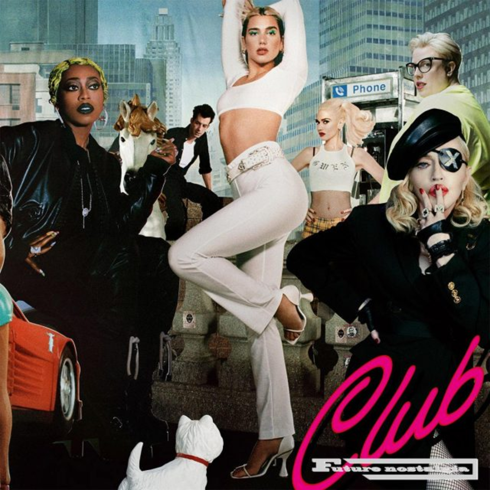

Future Nostalgia
(Warner Records)
O segundo álbum de estúdio lançado pela cantora inglesa, Dua Lipa, chega ao mundo após quase 3 anos de seu primeiro álbum autointitulado, responável pelo grande sucesso que a jovem pop star ganhou com o single chamado New Rules. Lançado no dia 27 de março de 2020, o Future Nostalgia traz fortes influências dos anos 90, levando alegria e vontade de dançar a todos durante a pandemia de covid-19. Sendo muito aclamado pela crítica e ganhador de um Grammy, suas músicas estão na boca do povo e no topo das paradas de sucesso até hoje.

1 Future Nostalgia
Sendo a faixa-título do álbum, se trata de um som mais experimental, não muito sério como a própria artista a descreveu. A música que é um hino feminista, traz elementos divertidos como nos versos, “I can’t teach a man how wear his pants”, e ao se chamar orgulhosamente de female alpha. Para Lipa, a faixa que foi lançada logo após Don’t Start Now serve como uma introdução a esse era, com o objetivo de explicar o conceito do projeto.
2 Don't Start Now
A principal faixa do Future Nostalgia carrega esse posto com maestria ao trazer uma canção original, animada e muito dançante. Sendo lançada em 24 de outubro de 2019, traz Dua com seu novo visual, agora loura com a raiz morena, oque representa a inspiração no passado, e modernidade e frescor ao mesmo tempo do seu novo trabalho. Se tornando um sucesso, aqui no Brasil não poderia ser diferente, com o tanborzin tamborzin do BBB.
3 Cool
Falando sobre um amor que faz você perder o sentido e a calma, Cool mostra uma nova amplitude vocal da cantora com uma batida super retrô e sensível. Sendo uma música de romance de verão para Dua, foi escrita com a ajuda de Tove Lo, criando algo realmente real e emotivo para Lipa, além de explorar novas sonoridades e estilos. É uma faixa perfeita para curtir e relaxar ao mesmo tempo em que aprecia os vocais impecáveis e a delicadeza das palavras.
4 Physical
Fazendo referência direta ao hit de 1981 de mesmo nome da cantora Olívia Newton, o segundo single oficial do álbum se encaixa perfeitamente ao tema retrô. Traz um som robusto, misterioso e ao mesmo tempo animador, perfeito para o seu treino. Com um clipe fenomenal que retrata uma história de amor incomum e muitas cores, conta também com um segundo vídeo feito exclusivamente para homenagear o estilo dos anos 80 nas academias americanas.
5 Levitating
Com muitas referências ao espaço sideral, a batida disco com influências do R&B e pop-funk dos anos 90, faz alusão ao levitar quando você se apaixona por alguém de uma forma leve e cativante. Ganhando destaque na plataforma Tik Tok, se torna o quinto single oficial do Future Nostalgia e se torna um verdadeiro hit global nas paradas de sucesso. Explorando um lado mais descontraído e falado, a canção com certeza irá fazer você rebolar.
6 Pretty Please
Com um instrumental marcante e constante durante toda a música, a necessidade de atenção romântica do parceiro é retratada como o próprio nome da música sugere, por favorzinho, em tradução literal, se referindo ao carinho e afeto que todo relacionamento demanda. Para Dua, a canção soa como o começo de uma relação, em que você promete que não vai mudar quem você é, mas no meio de tudo isso, acaba esquecendo que já se perdeu.
7 Hallucinate
Comparada pela crítica a obras de Prince e Madonna, o quarto single lançado após 4 meses devido ao avanço da COVID, conta com um clipe de animação feito totalmente digital. Servindo muito com uma vibe disco-house dos anos 2000, o tema central é uma paixão tão violenta que consegue mudar a sua percepção da realidade, alucinando. Considerado uma música de festival muito libertadora para a cantora, provavelmente fará todos se sentirem na balada.
8 Love Again
Oitavo e último single do álbum, teve seu clipe lançado apenas em junho de 2021, após ganhar atenção na França e pelos vários pedidos dos fãs pela despedida da era Future Nostalgia. Com o sample e trompetes da música número 1 no Reino Unido em 1997, Your Woman, a canção fala sobre relações sexuais inesperadas e improváveis de um jeito empoderado e interessante, “You got me in a love again”, tal como o refrão mostra muito bem.
9 Break My Heart
Tendo sido escolhida como terceiro single oficial, como o álbum, o seu vídeo foi adiado pelo começo da pandemia na metade do mês de março de 2020, interrompendo a divulgação e as futuras performances. Mas nem isso, impediu que a faixa fizesse sucesso, viralizando nas redes sociais e estourando. Com Dua Lipa se questionando sobre suas decisões amorosas, o seu refrão “I would've stayed at home” nunca fez tanto sentido.
10 Good In Bed
A faixa mais bem humorada e divertida do álbum não poderia ser outra, Good In Bed aborda uma relação puramente carnal em que você sabe que é tóxica para si, mas é tão bom que não consegue parar. Com elementos nostálgicos e não convencionais, estamos falando de algo atrevido e diferente. “Foi libertador fazer uma música tão despreocupada” diz Dua ao falar sobre a penúltima canção de seu projeto.
11 Boys Will Be Boys
Escolhida por Dua como última canção do álbum por ser muito poderosa e importante, retrata a desigualdade, o assédio sexual, a misoginia e o machismo de forma geral da sociedade sofrido pelas mulheres. O título Boys Will Be Boys é uma mentalidade que se criou para justificar o comportamento tóxico dos homens, oque corrobora para o machismo de hoje em dia, e a cantora que é feminista, vê necessidade de se mudar essa realidade e apoiar todas as meninas!
Future Nostalgia
(The Moonlight Edition)
Lançado no dia 11 de fevereiro de 2021, a reedição do Future Nostalgia mostrou ainda mais a força do projeto, indicado a oito Grammys esse ano, mantendo Dua como um dos artistas mais escutados das plataformas digitais no mundo, e ainda ajudou emplacando o single Levitating, após o remix com o rapper DaBaby, em segundo lugar na Billboard, permanecendo na lista por 50 semanas seguidas. Além de trazer quatro novas faixas, dentre elas cancões que haviam sido descartadas do álbum original, o The Moonlight Edition contempla parcerias inéditas com artistas como Miley Cyrus e J Balvin.
12 Fever
Primeira faixa da versão Deluxe do álbum, Fever é uma parceria com a cantora belga Angèle, uma amiga das redes sociais de Dua Lipa. De uma forma sexy e gostosa, as duas cantam sobre uma relação intensa e que traz calor só de pensar, como se estivessem com febre. Segundo single do The Moonlight Edition, conta com parte da letra em francês e um clipe gravado nas ruas de Paris comprovando a sintonia e amizade das jovens cantoras.
13 We're Good
Com uma vibe mais tropical e diferente do electro-pop usual, o lead single da reedição do álbum fala sobre um término de namoro amigável em que os dois se afastaram naturalmente e aceitam isso. Com o videoclipe fazendo referência direta ao filme Titanic, Dua é a cantora do navio que observa a relação de duas lagostas até que uma delas é pega para ser cozinhada e o acidente marinho acontece. Bem leve, descontraída e bem humorada.
14 Prisioner
Segundo single do novo álbum da cantora americana Miley Cyrus, o Plastic Hearts, Prisoner faz referência a faixa Physical de Olívia Newton de 1981 tal como Dua na faixa de mesmo nome, possuindo uma pegada bem rock, também passando a fazer parte do The Moonlight Edition. Falando de uma relação abusiva em que um parceiro fica manipulando e controlando o outro como se fosse um prisioneiro, Miley e Dua brincam com isso no clipe da música.
15 If It Ain't Me
Uma parceria muito aguardada e que havia sido vazada em janeiro de 2020 após a música ter sido descartada não saiu do papel infelizmente sem se saber o porque. If It Ain’t Me deveria ter a participação especial da cantora Normani, sendo muito especulada pela imprensa e os fãs, porém foi cortada da versão Deluxe do álbum. A faixa trata da volta por cima após se ter o coração partido por alguém que já te esqueceu, sendo muito dançante.
16 That Kind Of Woman
Após ser vazada totalmente em agosto do ano passado e ser descartada do álbum principal, That Kind Of Woman foi reavaliada e remixada para o Club Future Nostalgia, dando a esperança de um lançamento da faixa original, oque aconteceu na reedição do álbum. Com uma letra profunda sobre um amor muito forte em que apenas um olhar foi suficiente, é uma deliciosa música para se escutar e cantar junto ao mesmo tempo.
17 Not My Problem
Originalmente gravada para compor o primeiro álbum de Dua Lipa, autointitulado em 2017, a parceria com o cantor americano JID acabou sendo engavetada e esquecida por mais de 3 anos. Após ser editada novamente e com pequenas alterações para se encaixar na sonoridade do segundo álbum, finalmente a faixa ganhava vida. Com um som bem experimental e polêmico, temos uma faixa diferente e curiosa no mínimo.
18 Levitating Remix
Primeiro single da futura reedição do Future Nostalgia que viria mais tarde, Dua Lipa convoca o rapper de sucesso americano DaBaby em outubro de 2020 para uma versão remix do seu sucesso. Tendo o segundo verso substituído por um rap do americano, e um lindo clipe retratando uma festa espacial, a parceria deu um gás a faixa, levando os dois ao topo das principais paradas musicais mundiais consolidando ainda mais essa era.
19 One Day
Última música do Future Nostalgia The Moonlight Edition, Un Dia juntou a batida pop e a voz potente de Dua ao reggaeton de J Balvin, Bad Bunny e Tainy. Trazendo a tona uma decepção amorosa em que o parceiros iria se arrepender, o clima tropical e as praias são muito presentes na parceria inédita. Assim, se encerra com o gingado latino e o toque britânico a era de sucesso vivenciada pela artista de apenas 26 anos que se tornou uma verdadeira super star.
Club Future Nostalgia
(The Blessed Madonna Remix)
Para finalizar, depois do lançamento do Future Nostalgia, o cancelamento de todos os shows e turnês devido a pandemia, Dua Lipa anuncia que vendo a alegria que levou aos confinados no mundo todo com músicas dançantes inpiradas nos anos 90, iria lançar um álbum remixado, ainda mais contagiante e com parcerias inusitadas. Sendo assim, em 28 de Agosto de 2020, antes da versão Deluxe, o Club Future Nostalgia vem ao mundo, levando a atmosfera das Club Houses dos anos 80 e 90, e contando com a curadoria da DJ americana The Blessed Madona, e faixas com Gwen Stefani, Maddona e muito mais.